PROJECT KRPCE
IN PROGRESS...
>veg-tan leather
>TPU filament
Traditional crafts hold significant importance in my cultural background, originating from Slovakia. While studying in the Netherlands, I found myself trying to reconnect with my home through crafted products and started researching more about Slovak traditional crafts.
During a recent trip home, I finally got face to face with one of the last craftsmen who creates “Krpce” shoes.
These shoes, born out of necessity, were crafted by shepherds using veg-tan leather, molded from a single piece of pattern and held together by weaving.
While making this shoe I realized this is a barefoot shoe. The shepherds needed to bend their feet while navigating the wide meadows and forests which was not possible in boots.
The Krpce shoes, with their simplicity and compactness, became the preferred footwear for village people.
This encounter led me to link the concept of Krpce—crafted by ordinary individuals, not professional shoemakers or corporations—to my vision of the future of footwear:
Shoes created with consideration of individual’s needs and customized to fit their unique feet. With the advancements in 3D printing and 3D scanning technology, this vision is becoming more nad more achievable.
Inspired by these ideas, I designed my own version of Krpce shoes, aiming to reintegrate these forgotten values into modern footwear design.
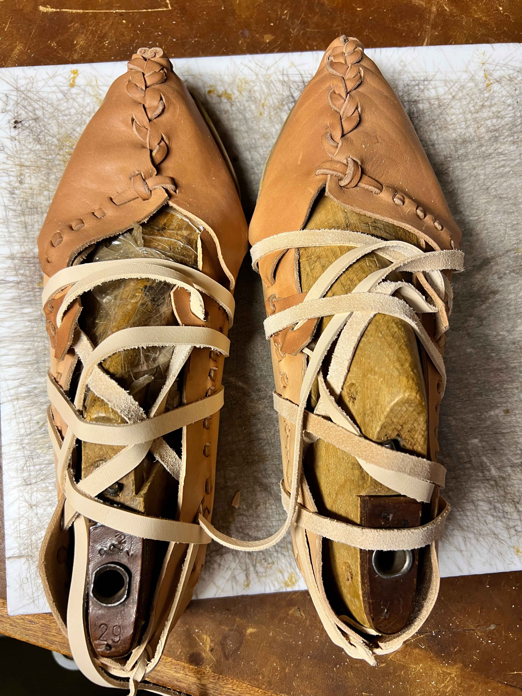
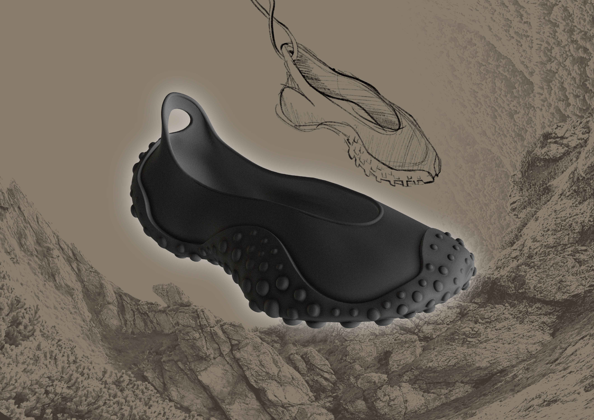
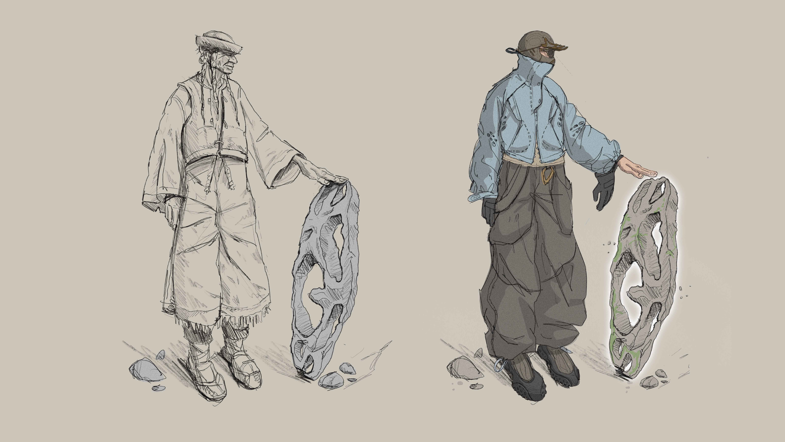
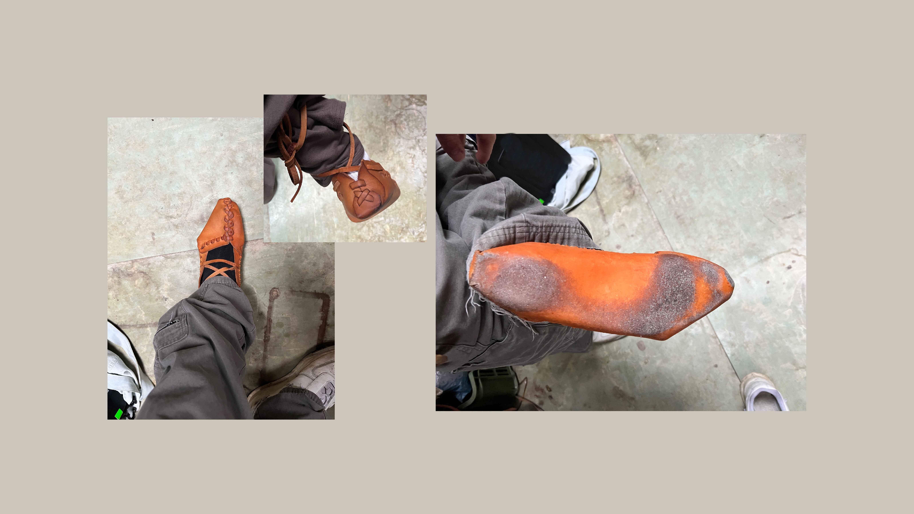
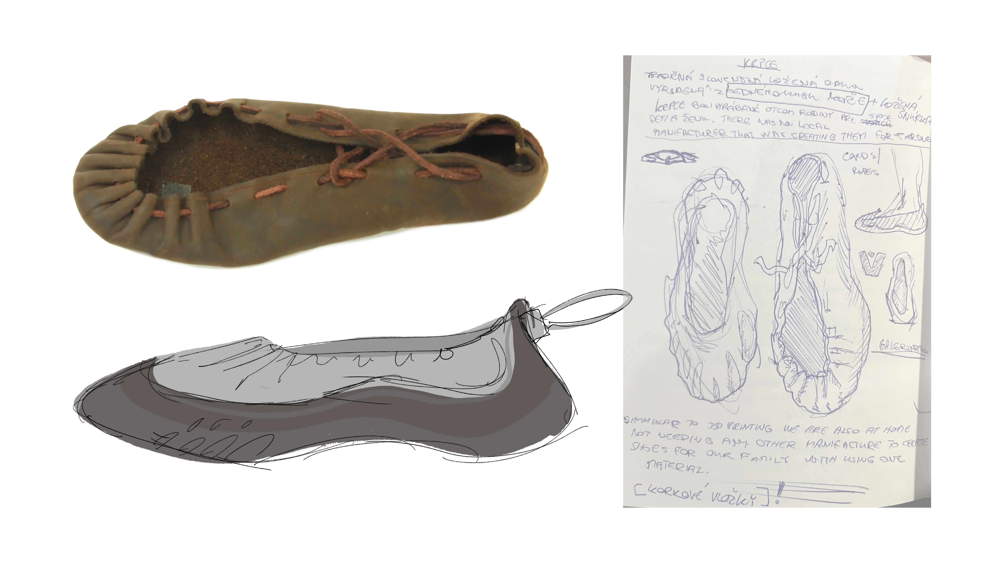
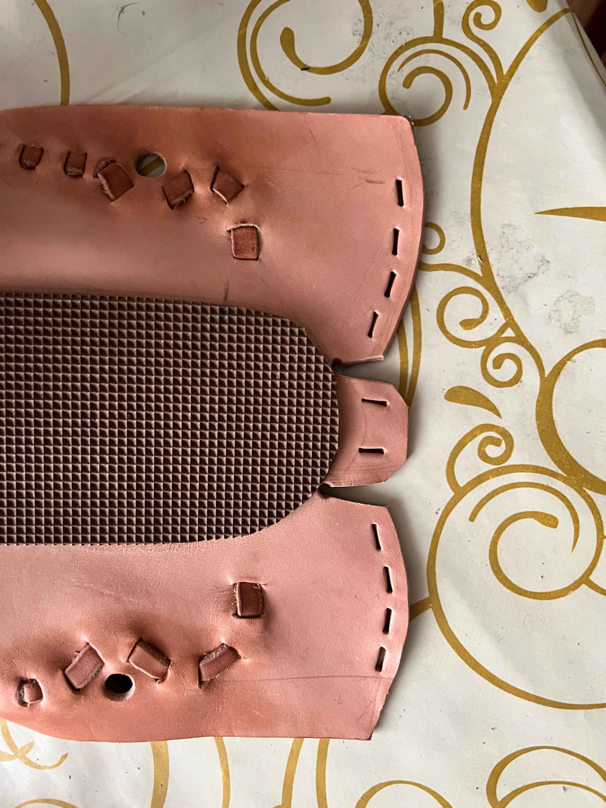
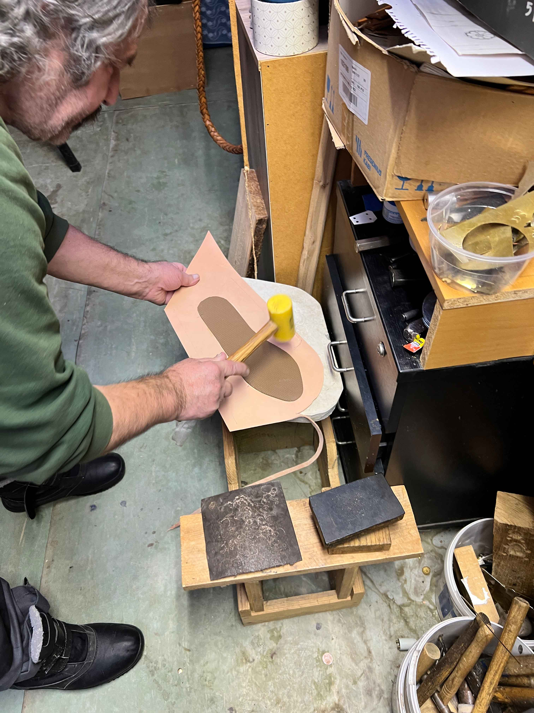
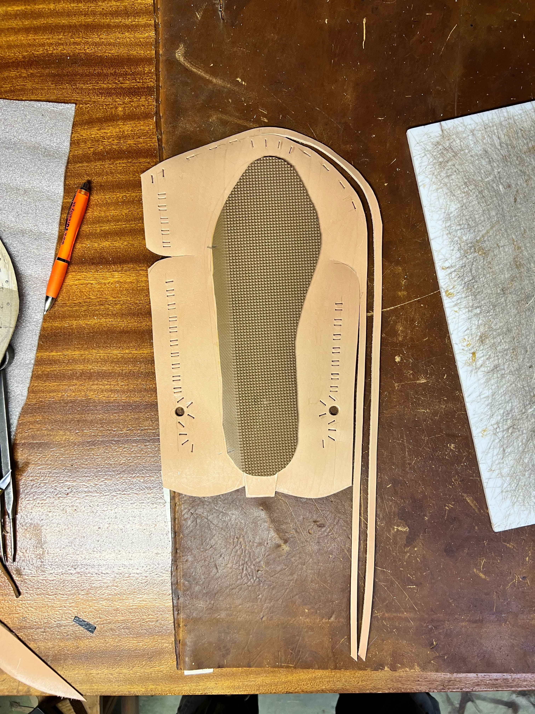
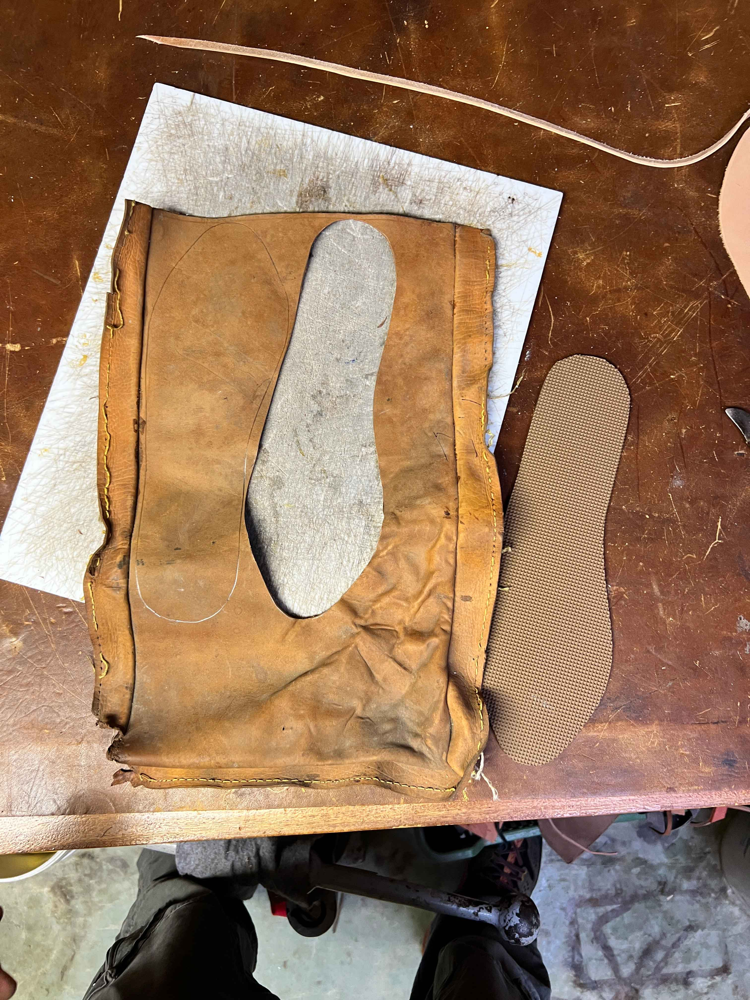
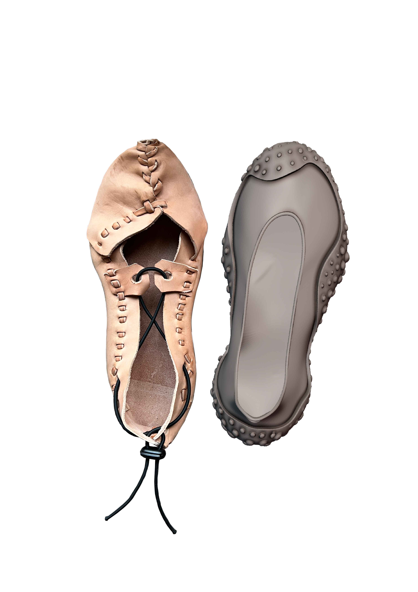
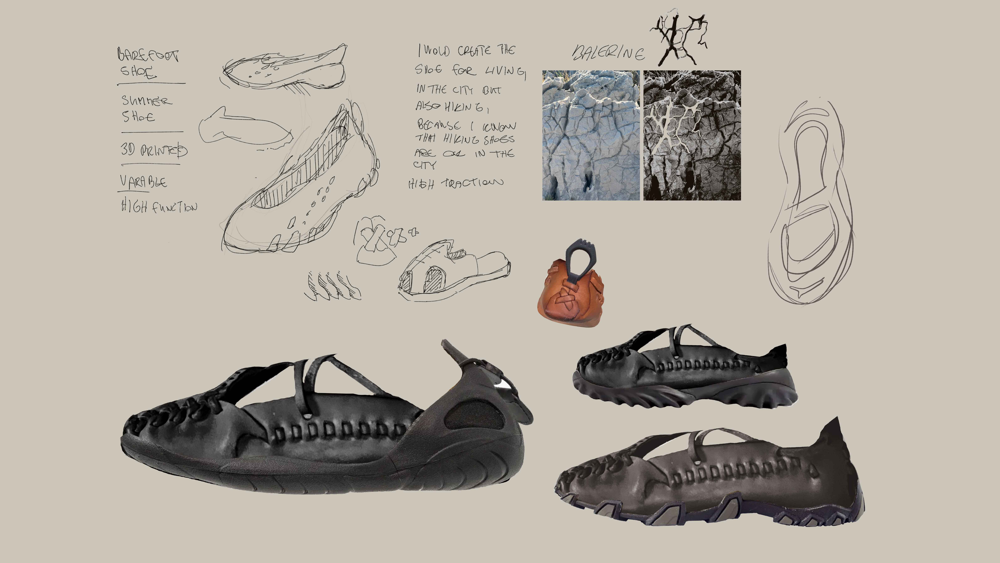
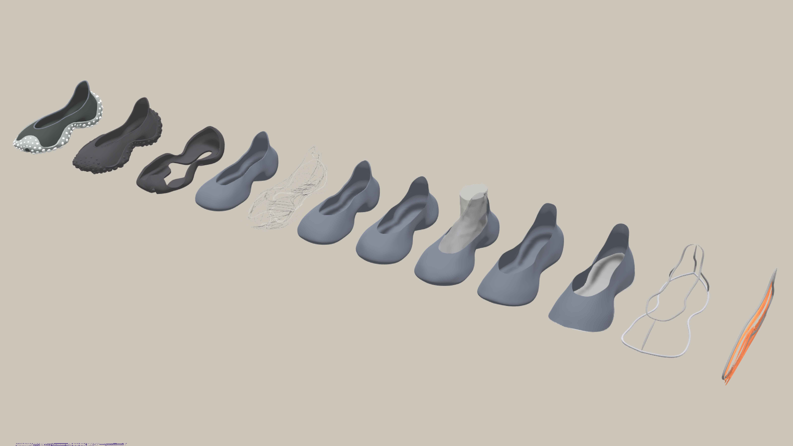
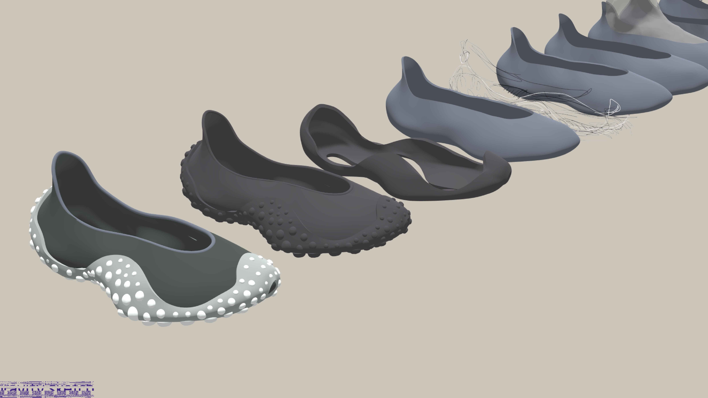
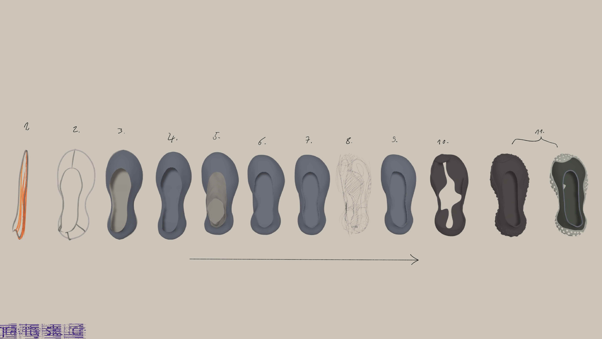
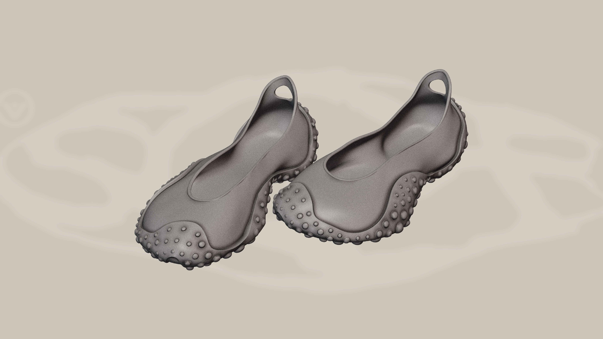